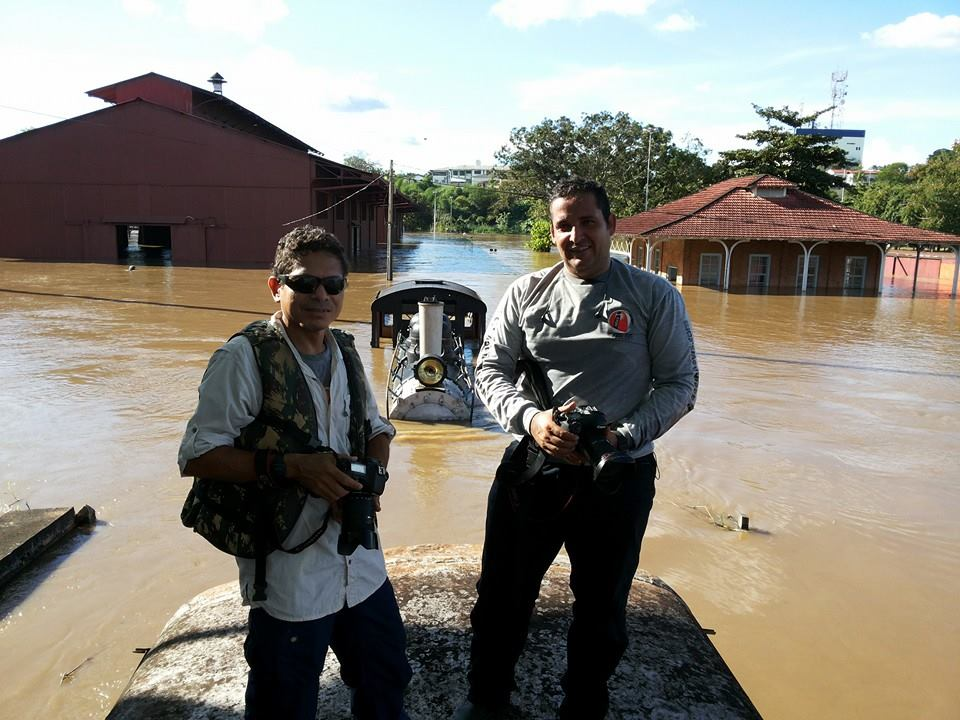
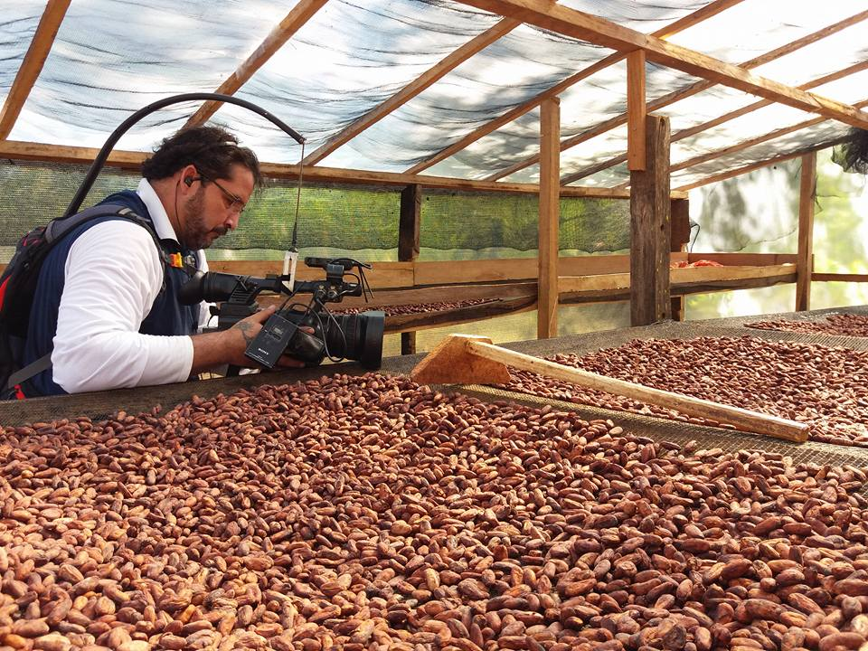
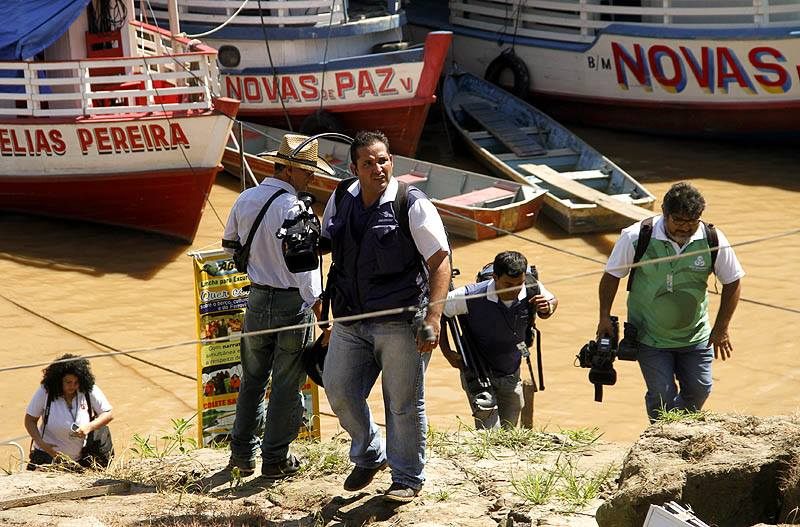
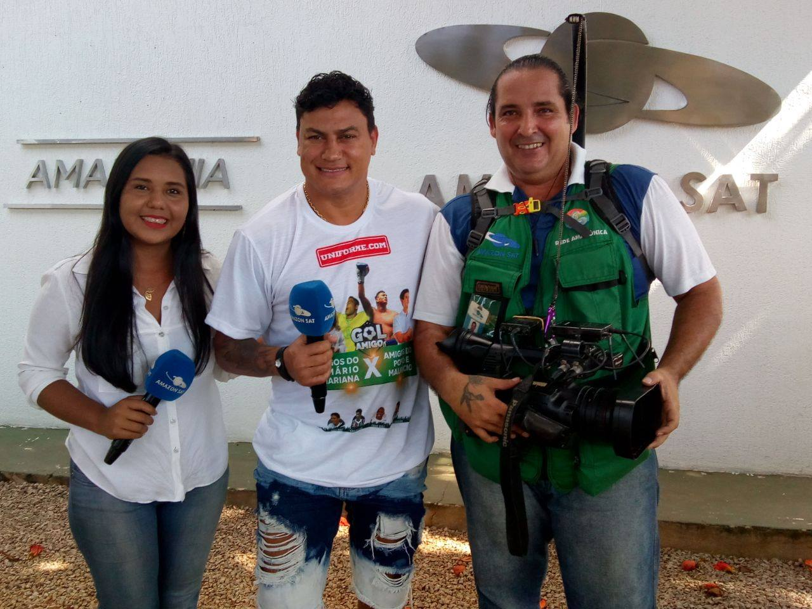
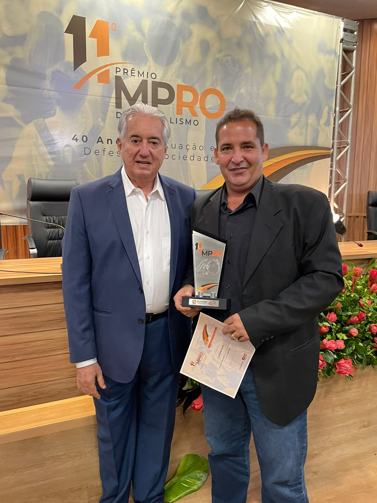
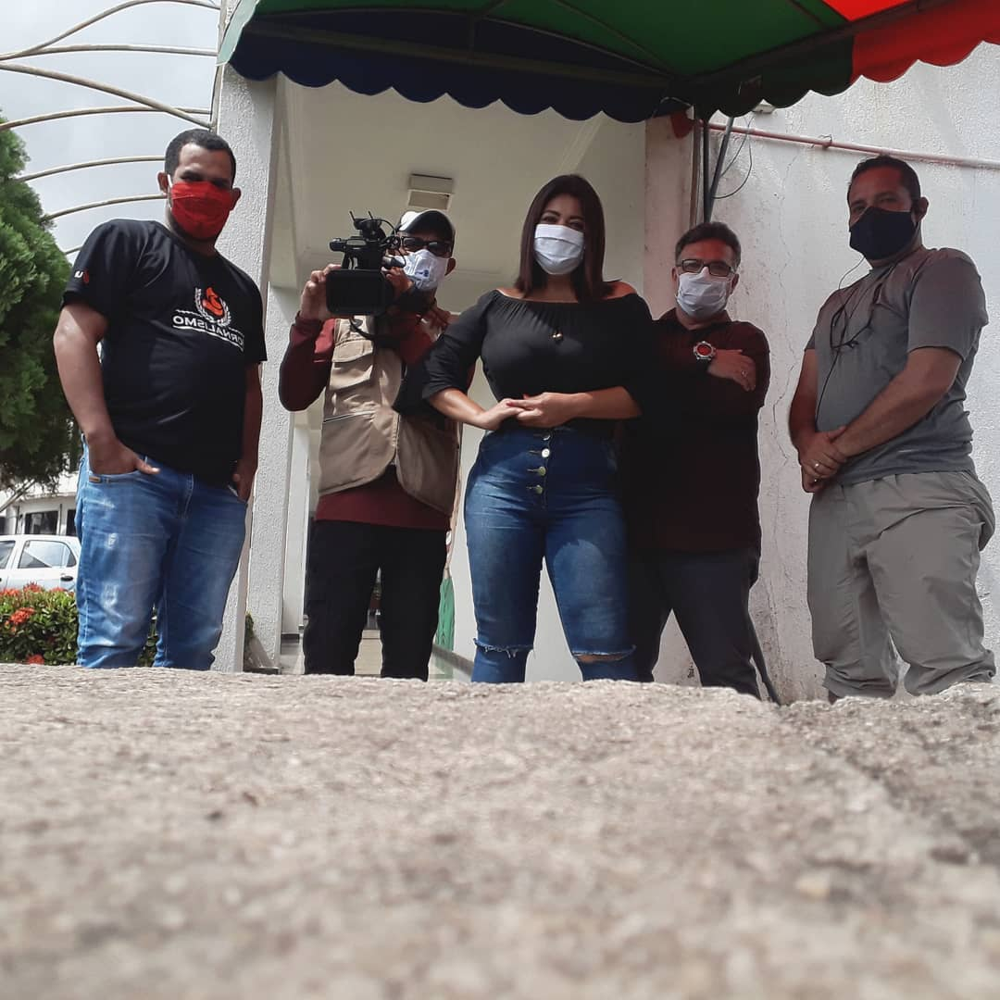
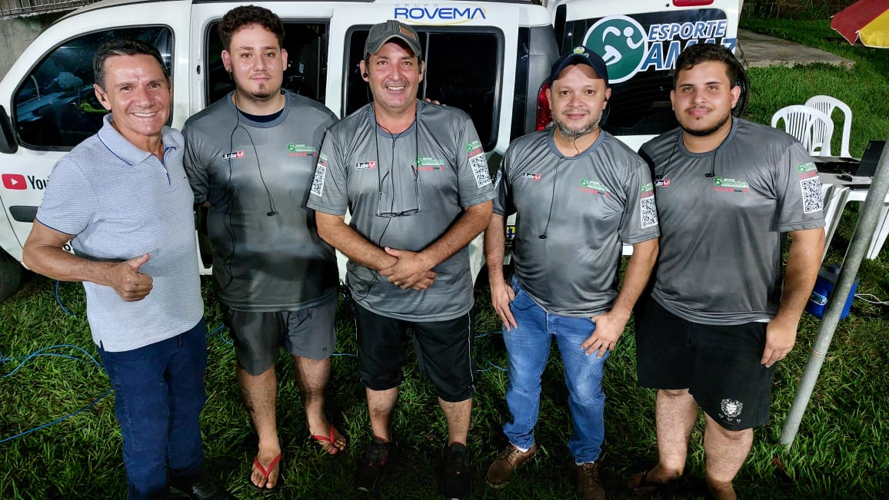
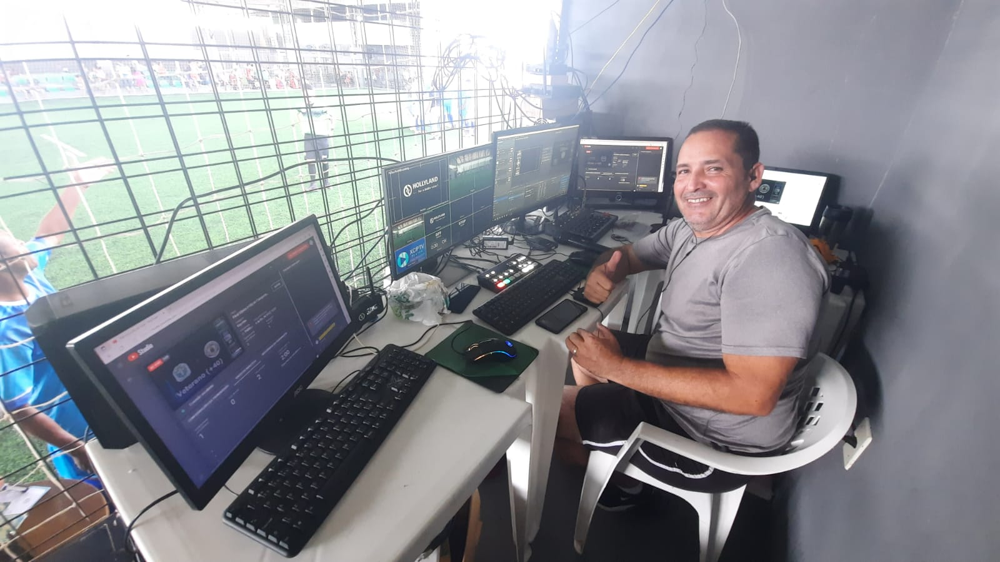
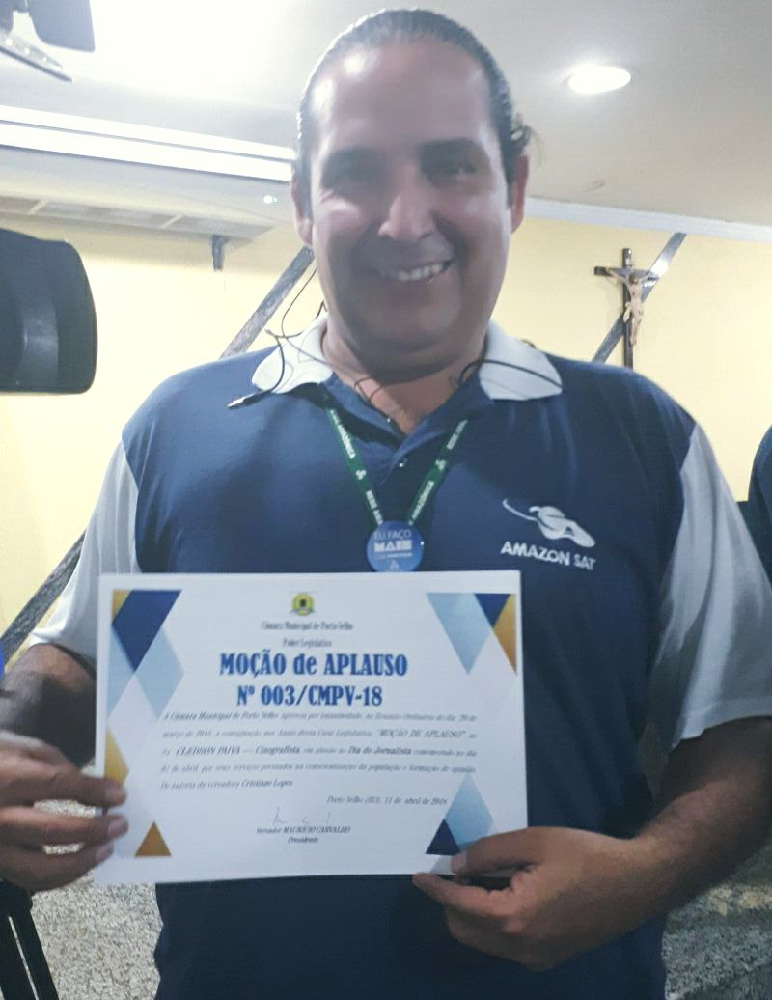
Transmissões ao vivo, produção de documentários e vídeos reportagens, repórter cinematográfico, habilidade em comunicação e trabalho em equipe .
Progamador Web - 2023
Idep-RO - Educação Profissional - Governo do Estado de Rondônia - https://rondonia.ro.gov.br/idep/.
Produção Multimídia - Faculdade Católica de Rondônia.
Técnico de comunicação em rádio e televisão - Fundação Rede Amazônica Em 2004; Cinegrafia e Edição de Imagens.
Empresa: Grupo Sic/TV (Record/RO) (09/2019) a (08/2023)
Cargo: Cinegrafista
Principais atividades: Repórter cinematográfico, produção jornalística e transmissão ao vivo.
Empresa: Grupo Rede Amazônica – Canal Amazon Sat (12/2007) a (03/2019) Cargo: Cinegrafista
Principais atividades: Repórter cinematográfico, editor de imagens, operador de audio, operador de mesa de vídeo, operador de drone, produção jornalística e transmissão ao vivo.
Produção e Direção de TV Canal Esporte Amazônia - YouTube
Transmissão ao Vivo, YouTube, Facebook e Instagram. https://www.youtube.com/c/esporteamazonia
Desenho de Som - Captação - 2010 CANNE - Centro Audiovisual Norte-Nordeste
11º Prêmio MPRO de Jornalismo/2022 - Edição Comemorativa 'Quarenta Anos de Atuação em Defesa da Sociedade’
Moção de Aplauso Câmara Municipal de Porto Velho / 2018.
 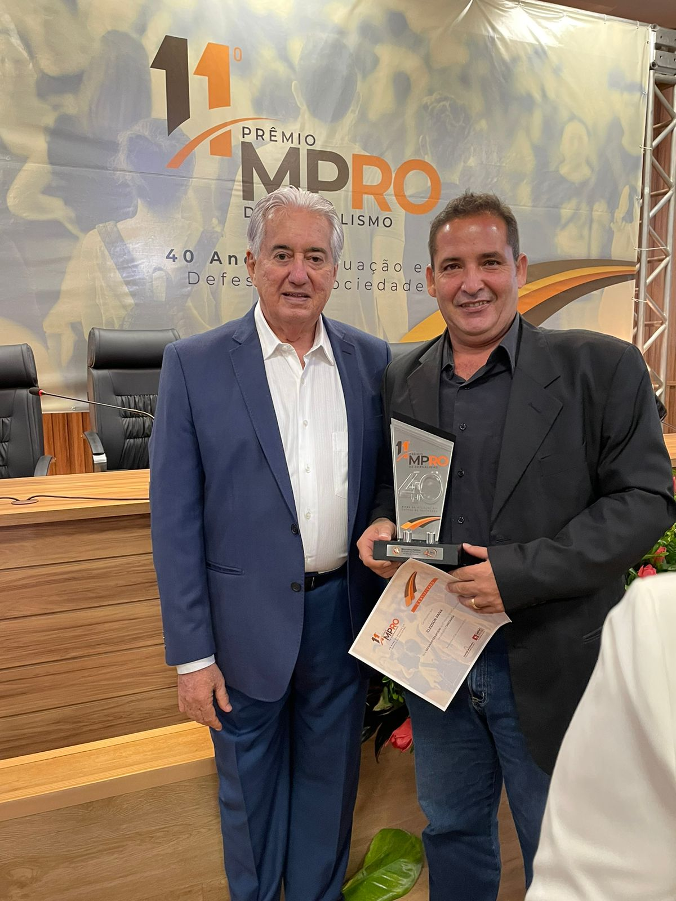
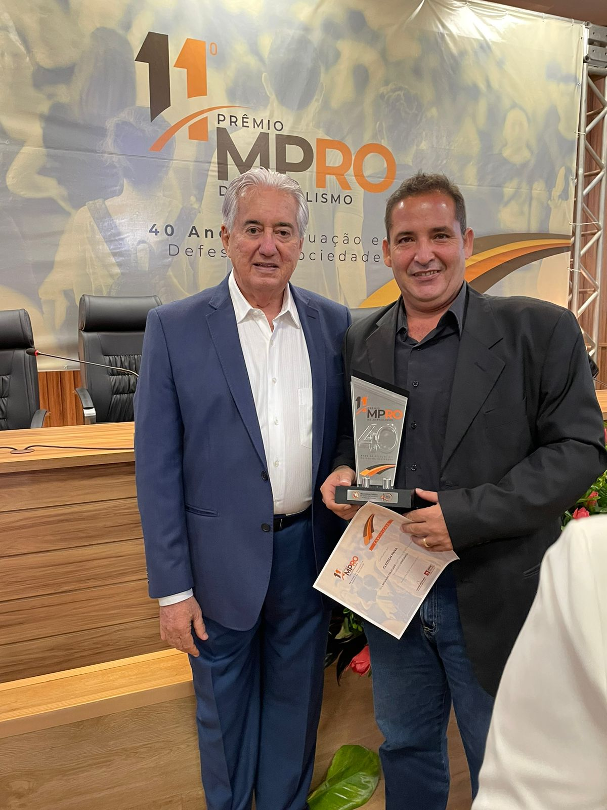
 00.37.32_7beceafc.jpg) 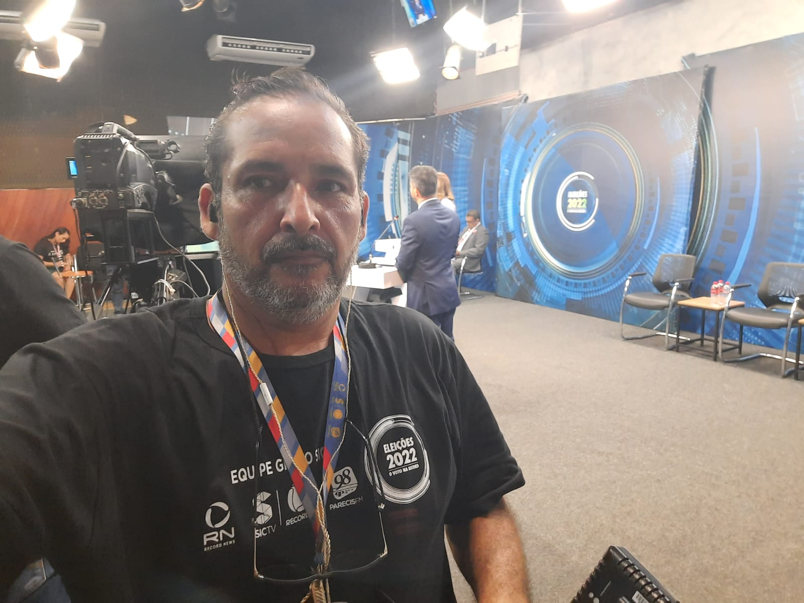
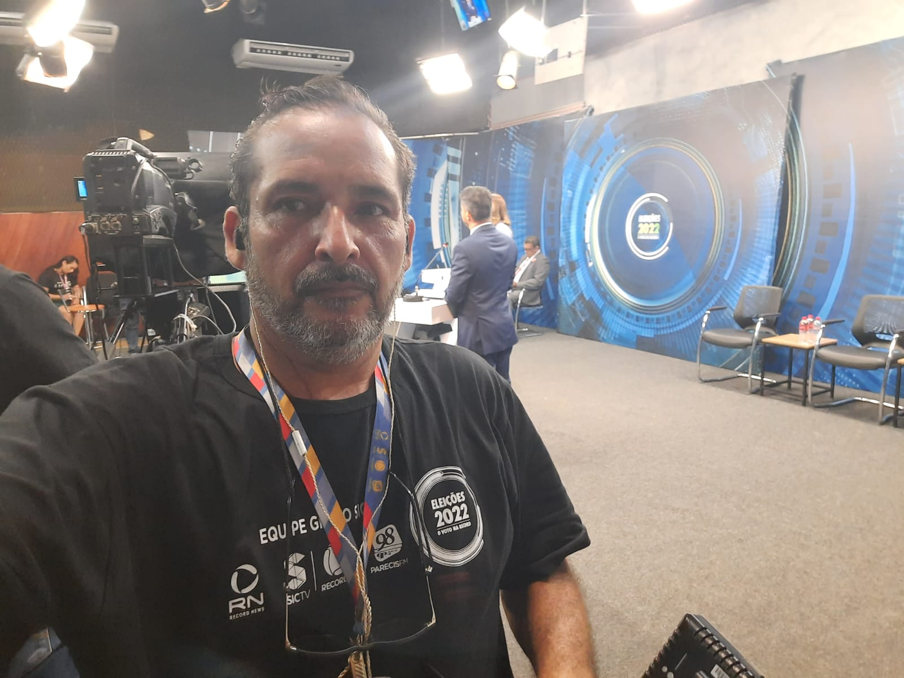

 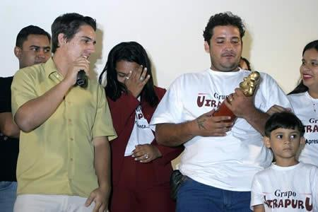
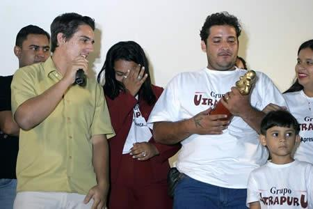